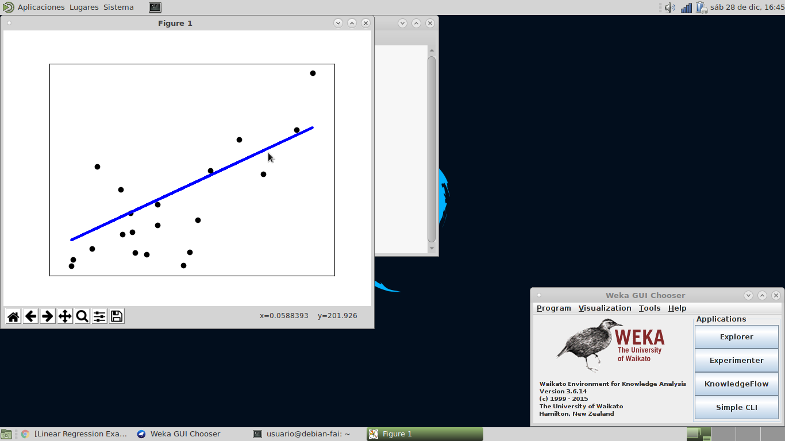

Debian-fai
Enfocada a estudiantes de las carreras, con todas las aplicaciones necesarias para las materias de la misma.
- check_circle_outline IDEs de Programación
- check_circle_outline Suite ofimática de Libreoffice
- check_circle_outline Reproductor de Audio y Video
- check_circle_outline Editores gráficos (GIMP. Inkscape, etc’)
- check_circle_outline Aplicaciones para Internet (Navegadores, Visores Remotos, etc‘)
- check_circle_outline Utilidades de Sistema (Wine, GParted, etc’)
- check_circle_outline kernel 4.9.0-11-amd64
- highlight_off Librerías de Machine Learning (Jupiter, Pandas, etc’)
Debian-fai ML
Enfocada a estudiantes de las carreras, con todas las aplicaciones necesarias para las materias de la carrera, con librerias para el desarrollo de ML.
- check_circle_outline IDEs de Programación
- check_circle_outline Suite ofimática de Libreoffice
- check_circle_outline Reproductor de Audio y Video
- check_circle_outline Editores gráficos (GIMP. Inkscape, etc’)
- check_circle_outline Aplicaciones para Internet (Navegadores, Visores Remotos, etc‘)
- check_circle_outline Utilidades de Sistema (Wine, GParted, etc’)
- check_circle_outline kernel 4.9.0-11-amd64
- highlight_off Librerías de Machine Learning (Jupiter, Pandas, etc’)
Debian-fai Lite
Enfocada a estudiantes de las carreras, con una reducida capacidad computacional (pc de 1gb de ram, etc').
- check_circle_outline IDEs de Programación
- check_circle_outline Suite ofimática de Libreoffice
- check_circle_outline Reproductor de Audio y Video
- check_circle_outline Editores gráficos (GIMP. Inkscape, etc’)
- check_circle_outline Aplicaciones para Internet (Navegadores, Visores Remotos, etc‘)
- check_circle_outline Utilidades de Sistema (Wine, GParted, etc’)
- check_circle_outline kernel 4.9.0-11-amd64
- check_circle_outline Librerías de Machine Learning (Jupiter, Pandas, etc’)
¿Qué es Debian-fai?
Debian-fai es una distribución de linux basada en Debian Stretch (64bit) con el entorno de escritorio MATE,
personalizada para la Facultad de Informática.
Contiene gran parte de las aplicaciones necesarias para las materias de programación y también para uso general.
Aplicaciones Integradas
Oficina
LibreOffice – Suite de oficina potente y libre.Atril – Visor de documentos pdf.
LyX – Procesador de documentos.
Sonido y Video:
VLC – Reproductor multimedia.Mplayer – Reproductor multimedia.
Brasero – Aplicación para grabar CD / DVD.

Gráficos:
Dia – Aplicación para graficar diagramas de estructura.Inkscape – Software de vectores gráficos de calidad profesional.
Gimp – Programa de manipulación de imágenes.
OpenScad – Permite crear objetos tridimensionales a partir de un script.
Simple Scan – Aplicación para escanear documentos.
Camorama – Visor webcam.
Internet:
Google Chrome, Chromium y FireFox – Navegadores web.Virt-Viewer – Visor Remoto.
Dropbox – Servicio de almacenamiento de archivos.
Wireshark – Aplicación para analizar el tráfico red en tiempo real.
qbittorrent – Gestor de descargas torrents.
FileZilla – gestor de FTP.
Programación:
Netbeans IDE – Entorno de desarrollo.JavaFX SceneBuilder – Editor para crear archivos FXML.
Eclipse IDE – Entorno de desarrollo.
GNU Emacs IDE – Editor extensible, personalizable, auto-documentado y de tiempo real.
Geany – Editor de texto.
DrRacket – Entorno de desarrollo.
Pharo – Entorno de desarrollo para programación orientada a objetos.
Squeak – Entorno de desarrollo para programación orientada a objetos.
Arduino IDE – Entorno de desarrollo para arduino.
Free Pascal – Compilador de Pascal.
Haskell Platform – Distribución de Haskell.partir de un script.
Simple Scan – Aplicación para escanear documentos.
Camorama – Visor webcam.
Utilidades:
Synaptic – Gestor de software.Gnome-system-tools – Herramienta de administración de usuarios y grupos.
System-config-printer – Interfaz gráfica para configurar impresoras.
GParted – Editor de particiones de disco.
Hplip – Aplicación desarrollada por HP para imprimir, escanear y enviar faxes con impresoras láser y de inyección de tinta HP en Linux.
Clonezilla – Aplicación para clonación de discos y particiones.
Wine – Aplicación capaz de ejecutar una capa de compatibilidad de Windows en Linux, MacOS y BSD.
Systemback – Aplicación que facilita la creación de copias de seguridad del sistema gestionando los archivos de configuración de los usuarios.
Utilidades varias de redes y administración: mc, nload, tcpdump, iperf, iotop, nmap, htop, openvpn, screen, speedtest-cli, filezilla

Nueva Versión!!
Sistema:
kernel 4.9.0-11-amd64mtr, mdadm, ifenslave
Neofetch
python-tk, gdb, gdb-multiarch
recordmydesktop
guvcview
freerdp-x11-dbg

IA:
python-sklearn, python-pandas:Aprendizaje automático en Python, Biblioteca de análisis de datos de Pythonweka:Weka es un software de aprendizaje automático de código abierto
Internet:
wavemon:monitor Wi-FiLinSSID:escáner de redes wifi

Programacion:
Eclipse PDT:Entorno de desarrollo para PHP.visual studio code:Editor de codigo
docker:Automatiza el despliegue de aplicaciones dentro de contenedores de software
gitkraken:Cliente GIT
JupyterNotebook:Editor de documentacion de software
apache2 php mysql:Servidor web apache con php y gestor de base de datos mysql
nodejs, packete:entorno de ejecución para JavaScript construido con el motor de JavaScript V8 de Chrome.
Oficina:
wxmaxima:Interfaz basada en documentos para el sistema de álgebra computacional Maxima
Utilidades:
clusterssh:Interactuar en varias sesiones SSH a la vez y ejecutar comandos de forma simultáneabridge-utils:contiene una utilidad necesaria para crear y administrar dispositivos bridge
gnome-boxes:Una sencilla aplicación de GNOME para ver, acceder y administrar sistemas remotos y virtuales